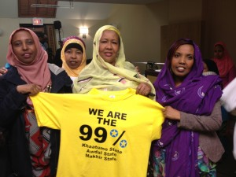

khatumo.net archive
Khatumo, Awdal and Makhir re-ignite an even bolder “United Somali Party” (USP): promised to bring Somalia 2.0
By A. Hindi
April 14, 2013

We are the 99% Khatumo, Awdal, Makhir
I want to start by thanking the president of Awdal State: Honourable Justice Rashiid Aw-Nur and his delegation for making such a long trip just to be here with us tonight. I also like to thank all the other dignitaries for coming here tonight. Finally, i would like to thank the hard working organizers of this event representating Khatumo, Awdal and Makhir communities of Toronto and Ottawa, Canada. Let me begin with a statement from our Canadian National Anthem. They say that In North America, Canada is “The True North Strong and Free”. Well, Ladies and gentlemen, in Northern Somalia, Awdal State, Khatumo State and Makhir States, are the “True North Strong and Free”. Tonight, my dear friends, There is a new breeze of freedom and liberty in Northern Somalia; after many years of civil war, hunger and hopelessness, suffering and oppression, there is a renewed sense of hope and belief in the sovereignty and Unity of our Country.
In 1956, under the famous Gol-khatumo tree, gathered the communities of Khatumo, Awdal and Makhir, United under the United Somali Party USP banner. Their wisdom and collaboration in bringing together North and South Somalia laid down the foundations for A united SOMALI Republic. Almost 60 years later, ladies and gentlemen, we have an opportunity to become that catalyst again, the tie that binds together a true and unified Somali Federation.
In the history of Somalia, some would say that the British government said that Somaliland was once a country. Well, ladies and gentlemen the British also said, that Awdal state was once an Empire, that Makhir State was once a Kingdom, and that Khatumo State was once a Dervish State. Whether you prefer a Country over an Empire or a Kingdom over a Dervish State, is not the issue before us today. That issue before us tonight is the new reality and the need to support the unity the re-birth of our internationally recognized Federal Government.
But this is not a blind support, Khatumo, Awdal and Makhir communities demand that the Federal Constitution be upheld with outmost conviction and honor. The Somali Parliament and it members have to represent the aspirations of their constituents. currently, The young girls and boys of khatumo and Awdal and Makhir do not feel that their voices are heard. The right of societies for self governance need to be respected.
Some people in Somaliland believe that folks from Sool, Sanaag and Cayn were part of the Siad Barre Regime that committed crimes against folks in Somaliland. The same folks in Somaliland believe that if Khatumo community Joined Somaliland, there would be recognition. This is a fallacy… see The problem with this logic is that: when you identify the same community to be both the Problem as well as the Solution to your troubles of recognition, then you are sure to hit a dead end as is the case today.
Unfortunately, over the past decade, thousands of people from Khatumo, Awdal, and Makhir have been killed simply because they believed in the unity of their country. These mass murders, day-light shootings of civilians and military occupations by administrations in Northern Somalia has been enabled by the International Community; The UN aid agencies such as the UNDP, the European Union specially the British Government, the World bank and others alike have been giving aid and money that was used to kill and oppress innocent civilians. Khatumo, Awdal and Makhir states are aware of the willful blindness of our Federal Government and the international community. We are asking the international community to respect its commitments to empower grassroots democratic movements and support their legitimate leadership of Khatumo, Awdal and Makhir.
President/Commander in Chief of United Somali Party (USP)
See… In the American Civil War. President Abraham Lincoln said in his famous Gettysburg Address said “that these dead shall not have died in vain — that this nation, under God, shall have a new birth of freedom — and that government of the people, by the people, for the people, shall not perish from the earth”. Khatumo and Awdal will never forget the heroes who have paid the ultimate price in defending the Somali Union. From Kalshaale, and Saylac to Xuddun and Makhir. Abdul and Omar Dayib did not have to die for loving their blue Somali union flag just a little bit too much. Mr president: I have a question: “What colour is your flag”.
Mr. President, Hassan Sheikh… My President: Will you stand up for the Union of a United Somalia. Will you prefer a community over another. And if you truly loved the blue Somali flag. Mr. Pres. will you provide compensation for Abdul Jama, of khatumo State and sixteen year old Cumar Dayib Maal, of awdal State, those young boys who were shot and killed for raising up the Somali Flag in their homes. Just like Abrahim Lincoln visited the graves of his Unionists, will you visit Abdul and Omar ‘s Hometown of Saylac and Taleex and buhoodle and if some people ask you why are you visiting these graves, tell them without the dedication of heroes like Abdul and Omar Dayib, there would be no Somali Union. God Bless their soul.
Thank you very much
God Bless Khatumo, Awdal and Makhir state-s
Email.: admin@khatumo.net